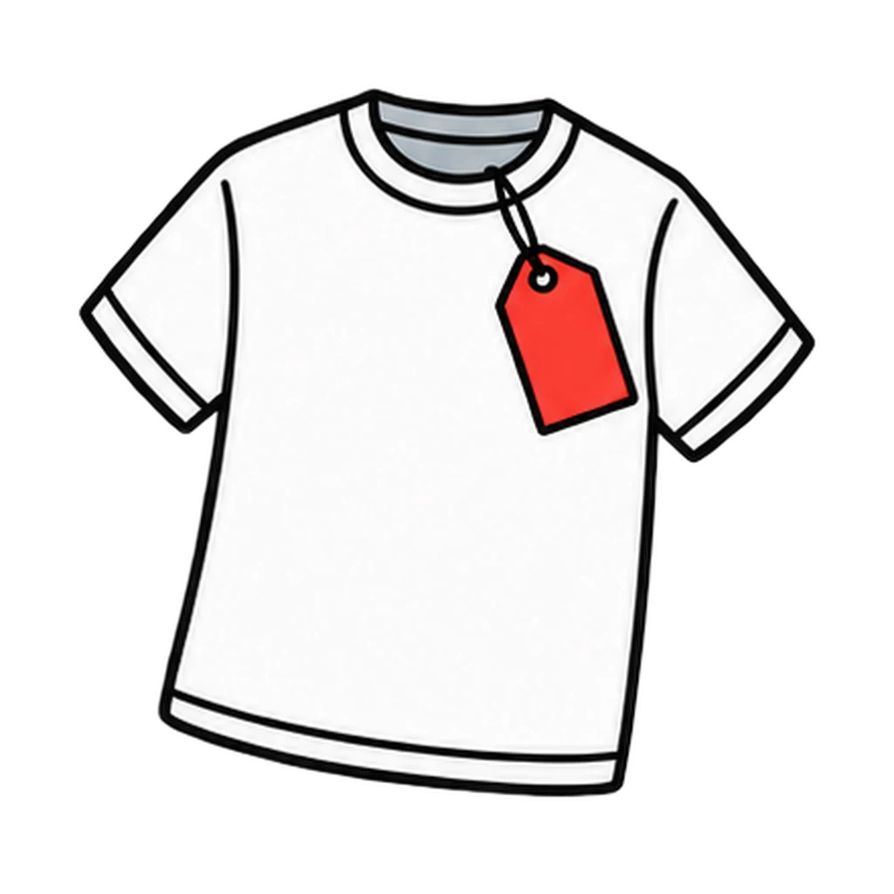
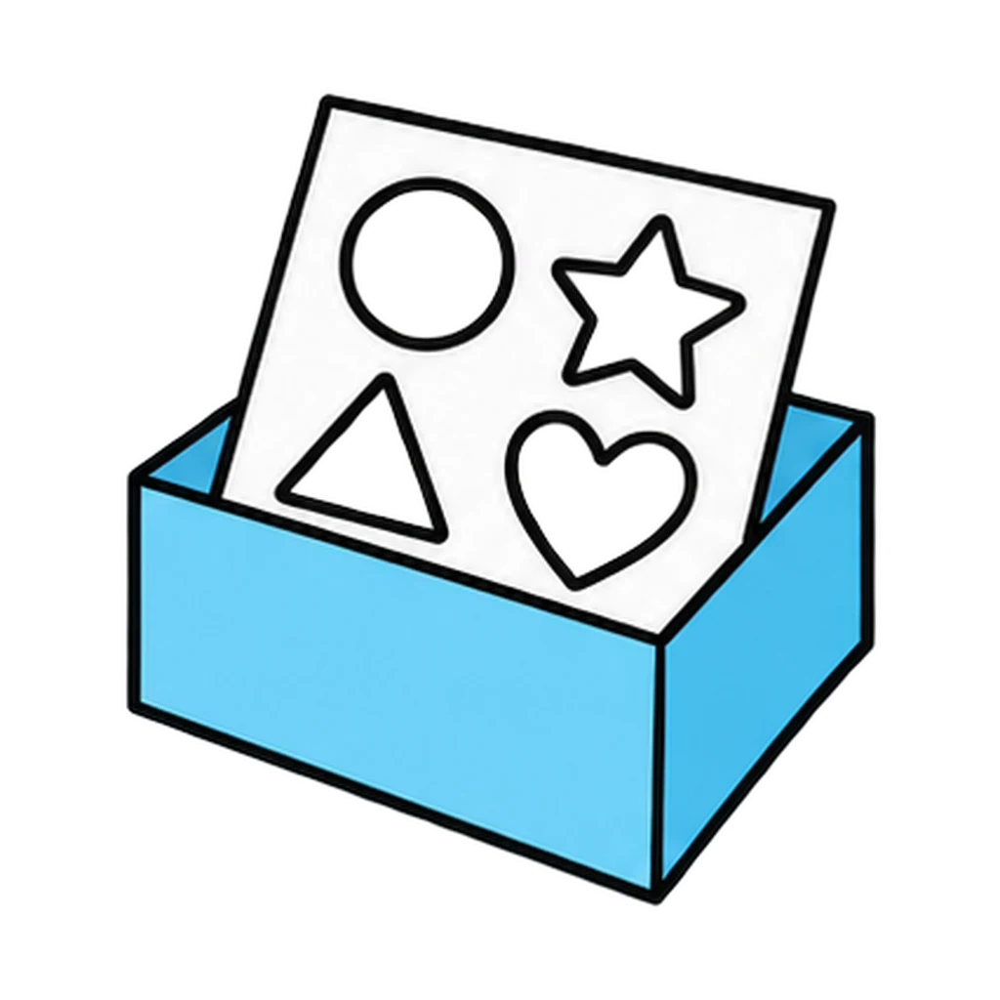
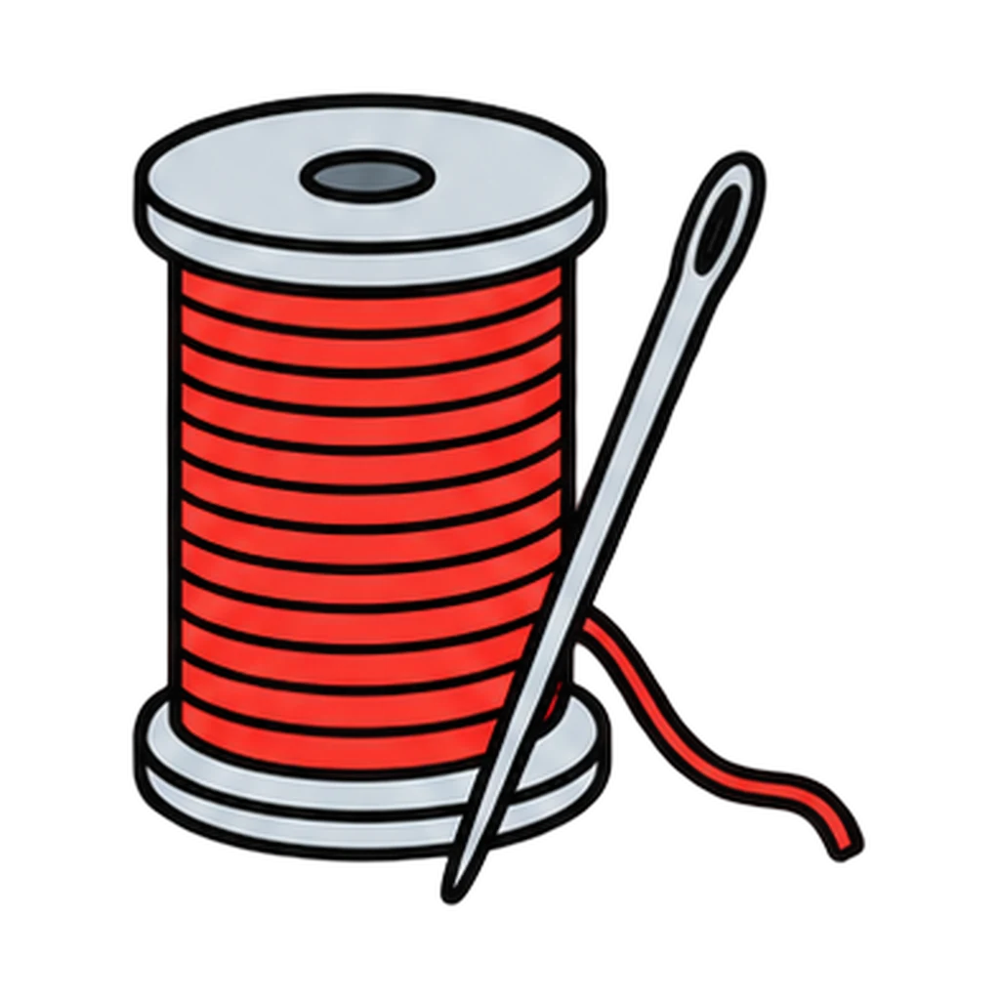
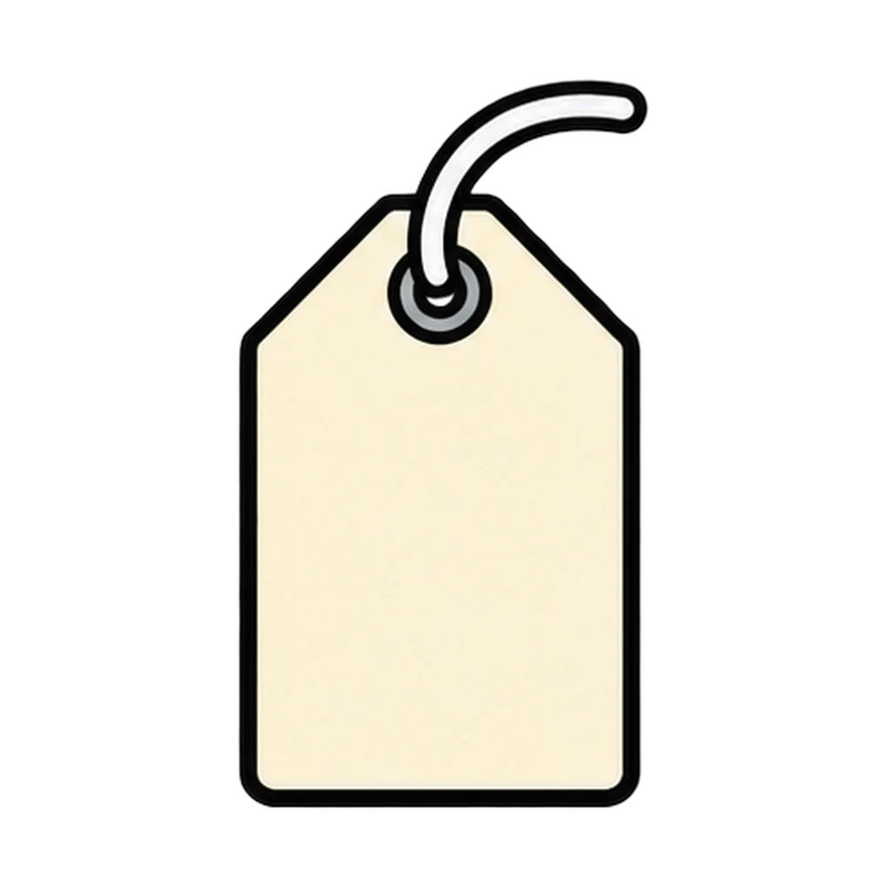
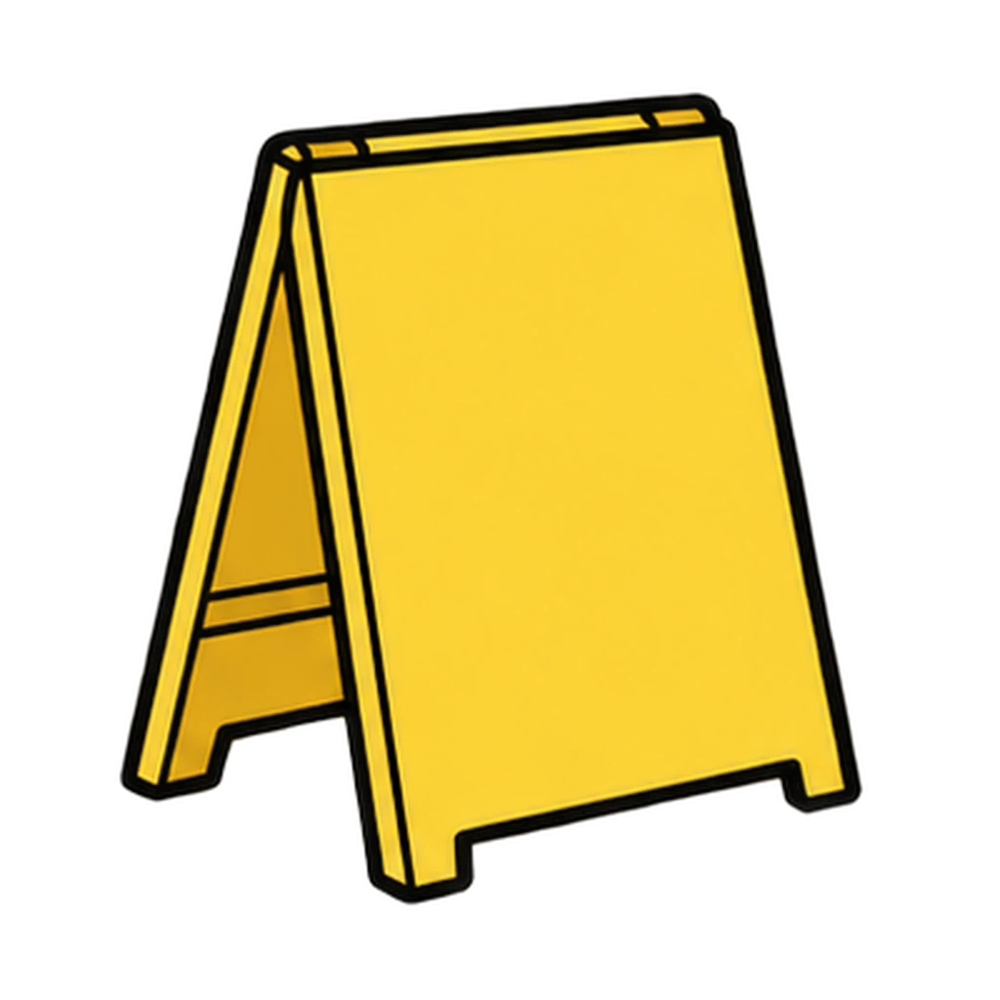
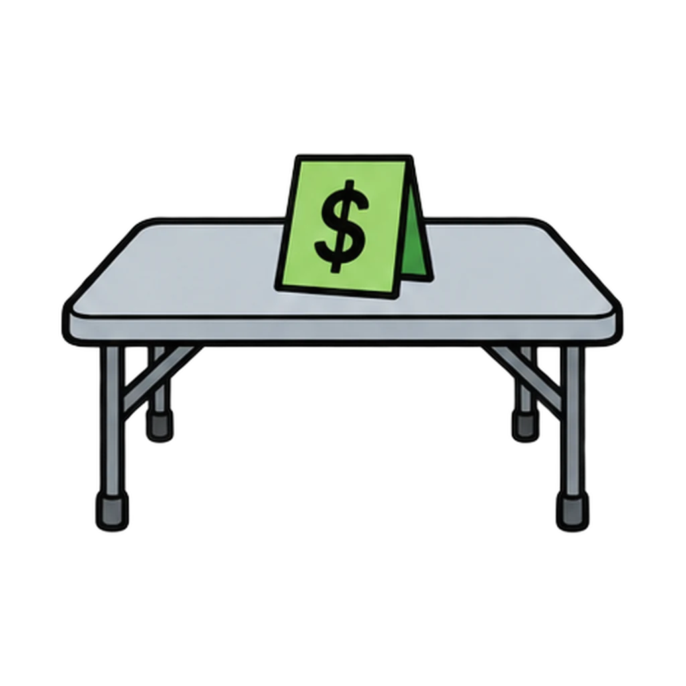

Reviews Lesson 7.6, Lesson 7.8. Reviews the arithmetic of Lesson 7.6 (the class T-shirt, the 60-shirt twist, the cookies, business or hobby) and Lesson 7.8 Day 2 (the drawstring tote bag: unit cost, price, margin, fixed cost, break-even rounded up, the three errors, and guess versus reason on the projection). Round 1 is a five-second check on the profit formula before Lesson 7.8; round 2 is the Numbers Clinic warm-up at the start of Lesson 7.10 Day 1 in the one-period version, or the do now of Lesson 7.8 Day 2. Every number is from the handouts and the teacher key, so a student who misses sees the same sentence the teacher would say. Grade 6 plays round 1 only, which uses the same numbers as the ten-shirt version in the key. Calculators are allowed.

Break-Even
A numbers card appears: the class T-shirt, the cookies, or the tote bag. Tap the right amount, word, or fix from four. Then sort the tote bag's cost lines into Fixed cost or Unit cost.
How to play
- A hobby is not worse than a business. This is a question about money, not about worth.




